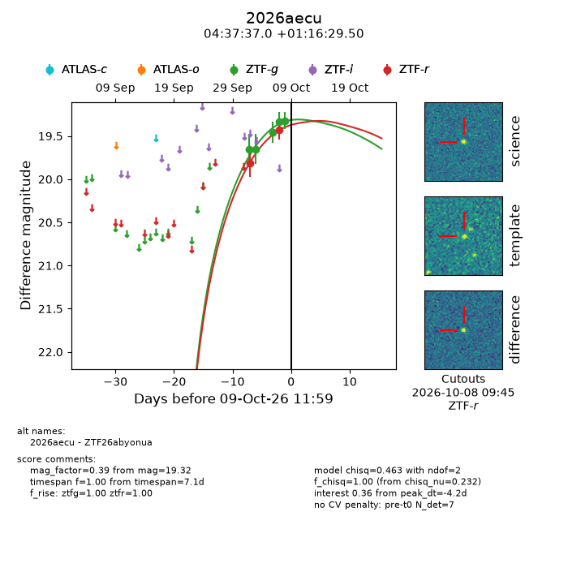
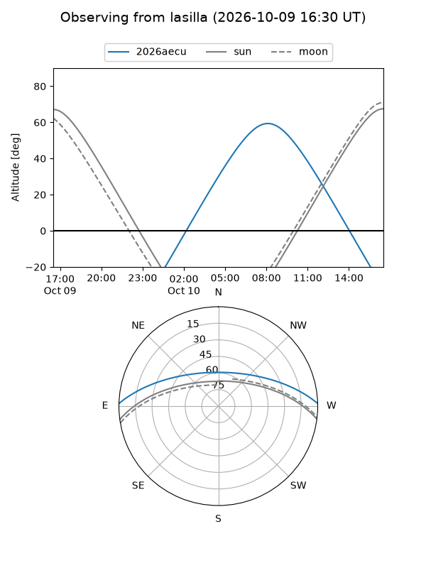
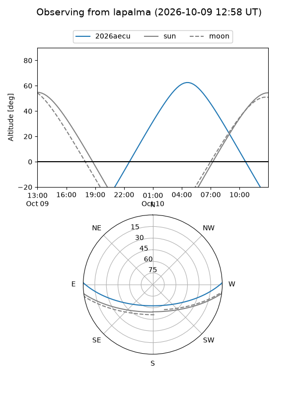
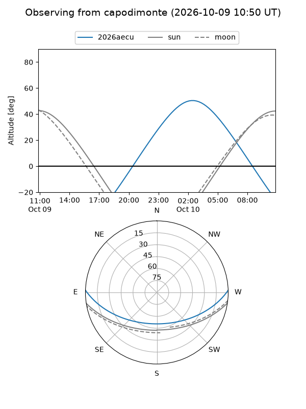
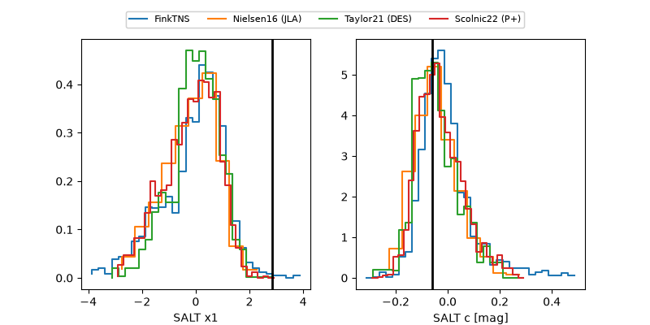

2026aecu
Target 2026aecu at 2026-10-09 12:01
Aliases and brokers:
FINK-ZTF: ztf.fink-portal.org/ZTF26abyonua
Lasair-ZTF: lasair-ztf.lsst.ac.uk/objects/ZTF26abyonua
ALeRCE-ZTF: alerce.online/object/ZTF26abyonua
YSE-PZ: ziggy.ucolick.org/yse/transient_detail/2026aecu
TNS name: wis-tns.org/object/2026aecu
Direct TNS query: direct search
alt names
ZTF26abyonua (ztf,fink_ztf)
2026aecu (tns,yse)
Coordinates:
equatorial (ra, dec) = 69.4041,+1.27486
equatorial (HMS+DMS) = 04:37:36.98,+01:16:29.50
galactic (l, b) = (194.9258,-28.70976)
Flags:
peak dt: -4.2
Photometry:
last ztfg=19.32, ztfr=19.42
5 ztfg, 2 ztfr detections
Lightcurve

Visibility



Additional plots
